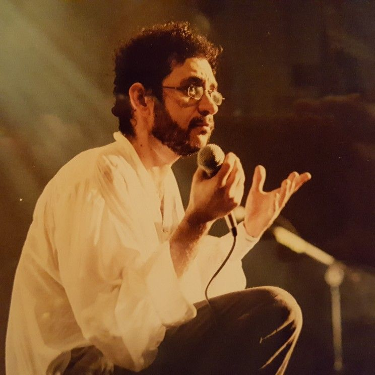
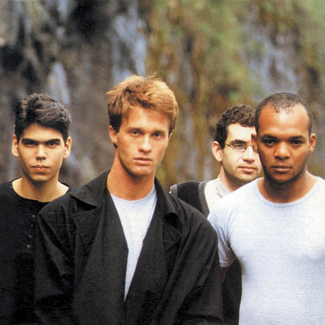
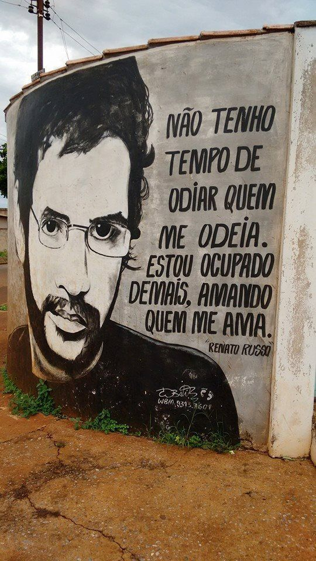
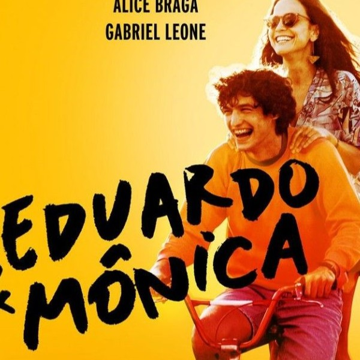
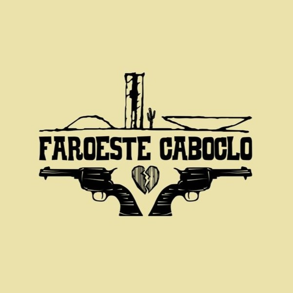

Renato Russo nasceu em 1960 e mudou-se para Brasília ainda criança. Apaixonado por literatura e música,
passou por uma doença óssea na adolescência que o deixou meses sem andar — período em que desenvolveu sua
sensibilidade artística. Entrou no cenário musical criando letras profundas e formando sua primeira banda,
o Aborto Elétrico.
Em 1982, Renato formou a Legião Urbana, que se tornaria um ícone do rock nacional. Com músicas como “Tempo Perdido”,
“Eduardo e Mônica” e “faroeste caboclo”, a banda marcou gerações. Seu estilo poético, crítico e emocional transformou
Renato em um dos maiores letristas do Brasil.
Nos anos 1990, sua saúde começou a se fragilizar, e Renato faleceu em 1996, aos 36 anos. Mesmo assim, sua obra permanece
viva: ele é lembrado como um dos artistas mais influentes da música brasileira, com canções que continuam emocionando e
inspirando milhões de pessoas.

“Quando tudo nos parece dar errado Acontecem coisas boas Que não teriam acontecido Se tudo tivesse dado certo.”
-Renato Russo
Tempo Perdido
Ouça aquiLetra
Todos os dias quando acordo
Não tenho mais o tempo que passou
Mas tenho muito tempo
Temos todo o tempo do mundo
Todos os dias
Antes de dormir
Lembro e esqueço como foi o dia
Sempre em frente
Não temos tempo a perder
Nosso suor sagrado
É bem mais belo que esse sangue amargo
E tão sério
E selvagem
Selvagem
Selvagem
Veja o sol dessa manhã tão cinza
A tempestade que chega é da cor dos teus olhos
Castanhos
Então me abraça forte
Me diz mais uma vez que já estamos
Distantes de tudo
Temos nosso próprio tempo
Temos nosso próprio tempo
Temos nosso próprio tempo
Mas deixe as luzes
Acesas
Agora
O que foi escondido é o que se escondeu
E o que foi prometido, ninguém prometeu
Nem foi tempo perdido
Somos tão jovens
Tão jovens
Tão jovens

Eduardo e Mônica
Ouça aquiLetra
Quem um dia irá dizer que não existe razão
Nas coisas feitas pelo coração
E quem me irá dizer que não existe razão
Eduardo abriu os olhos, mas não quis se levantar
Ficou deitado e viu que horas eram
Enquanto Mônica tomava um conhaque
No outro canto da cidade, como eles disseram
Eduardo e Mônica um dia se encontraram sem querer
E conversaram muito mesmo pra tentar se conhecer
arinha do cursinho do Eduardo que disse
Tem uma festa legal e a gente quer se divertir
Festa estranha, com gente esquisita
Eu não tô legal, não aguento mais birita
E a Mônica riu e quis saber um pouco mais
Sobre o boyzinho que tentava impressionar
E o Eduardo, meio tonto só pensava em ir pra casa
É quase duas e eu vou me ferrar
Eduardo e Mônica trocaram telefone
Depois telefonaram e decidiram se encontrar
O Eduardo sugeriu uma lanchonete
Mas a Mônica queria ver um filme do Godard
Se encontraram então no Parque da Cidade
A Mônica de moto e o Eduardo de camelo
O Eduardo achou estranho e melhor não comentar
Mas a menina tinha tinta no cabelo
Eduardo e Mônica era nada parecido
Ela era de Leão e ele tinha dezesseis
Ela fazia medicina e falava alemão
E ele ainda nas aulinhas de inglês
Ela gostava do Bandeira e do Bauhaus
De Van Gogh e dos Mutantes
De Caetano e de Rimbaud
E o Eduardo gostava de novela
E jogava futebol-de-botão com seu avô
Ela falava coisas sobre o Planalto Central
Também magia e meditação
E o Eduardo ainda tava no esquema
Escola, cinema, clube, televisão
E, mesmo com tudo diferente
Veio meio de repente
Uma vontade de se ver
E os dois se encontravam todo dia
E a vontade crescia
Como tinha de ser
Eduardo e Mônica fizeram natação, fotografia
Teatro e artesanato e foram viajar
A Mônica explicava pro Eduardo
Coisas sobre o céu, a terra, a água e o ar
Ele aprendeu a beber, deixou o cabelo crescer
E decidiu trabalhar
E ela se formou no mesmo mês
Que ele passou no vestibular
E os dois comemoraram juntos
E também brigaram juntos muitas vezes depois
E todo mundo diz que ele completa ela e vice-versa
Que nem feijão com arroz
Construíram uma casa uns dois anos atrás
Mais ou menos quando os gêmeos vieram
Batalharam grana, seguraram legal
A barra mais pesada que tiveram
Eduardo e Mônica voltaram pra Brasília
E a nossa amizade dá saudade no verão
Só que nessas férias não vão viajar
Porque o filhinho do Eduardo
Tá de recuperação ah-ah-ah
E quem um dia irá dizer que existe razão
Nas coisas feitas pelo coração
E quem me irá dizer
Que não existe razão

Faroeste Caboclo
Ouça aquiLetra
Não tinha medo o tal João de Santo Cristo
Era o que todos diziam quando ele se perdeu
Deixou pra trás todo o marasmo da fazenda
Só pra sentir no seu sangue o ódio que Jesus lhe deu
Quando criança só pensava em ser bandido
Ainda mais quando com um tiro de soldado o pai morreu
Era o terror da cercania onde morava
E na escola até o professor com ele aprendeu
Ia pra igreja só pra roubar o dinheiro
Que as velhinhas colocavam na caixinha do altar
Sentia mesmo que era mesmo diferente
Sentia que aquilo ali não era o seu lugar
Ele queria sair para ver o mar
E as coisas que ele via na televisão
Juntou dinheiro para poder viajar
De escolha própria, escolheu a solidão
Comia todas as menininhas da cidade
De tanto brincar de médico, aos doze era professor
Aos quinze, foi mandado pro reformatório
Onde aumentou seu ódio diante de tanto terror
Não entendia como a vida funcionava
Discriminação por causa da sua classe e sua cor
Ficou cansado de tentar achar resposta
E comprou uma passagem, foi direto a Salvador
E lá chegando foi tomar um cafezinho
E encontrou um boiadeiro com quem foi falar
E o boiadeiro tinha uma passagem e ia perder a viagem
Mas João foi lhe salvar
Dizia ele, "estou indo pra Brasília
Neste país, lugar melhor não há
'To precisando visitar a minha filha
Eu fico aqui e você vai no meu lugar"
E João aceitou sua proposta
E num ônibus entrou no Planalto Central
Ele ficou bestificado com a cidade
Saindo da rodoviária, viu as luzes de Natal
Meu Deus, mais que cidade linda
No Ano Novo eu começo a trabalhar
Cortar madeira, aprendiz de carpinteiro
Ganhava cem mil por mês em Taguatinga
Na sexta-feira ia pra zona da cidade
Gastar todo o seu dinheiro de rapaz trabalhador
E conhecia muita gente interessante
Até um neto bastardo do seu bisavô
Um peruano que vivia na Bolívia
E muitas coisas trazia de lá
Seu nome era Pablo e ele dizia
Que um negócio ele ia começar
E o Santo Cristo até a morte trabalhava
Mas o dinheiro não dava pra ele se alimentar
E ouvia às sete horas o noticiário
Que sempre dizia que o Seu ministro ia ajudar
Mas ele não queria mais conversa
E decidiu que, como Pablo, ele ia se virar
Elaborou mais uma vez seu plano santo
E sem ser crucificado, a plantação foi começar
Logo logo os maluco da cidade souberam da novidade
"Tem bagulho bom ai!"
E João de Santo Cristo ficou rico
E acabou com todos os traficantes dali
Fez amigos, frequentava a Asa Norte
E ia pra festa de rock, pra se libertar
De repente sob uma má influência dos
boyzinho da cidade começou a roubar
Já no primeiro roubo, ele dançou
E pro inferno ele foi pela primeira vez
Violência e estupro do seu corpo
Vocês vão ver, eu vou pegar vocês
Agora o Santo Cristo era bandido
Destemido e temido no Distrito Federal
Não tinha nenhum medo de polícia
Capitão ou traficante, playboy ou general
Foi quando conheceu uma menina
E de todos os seus pecados ele se arrependeu
Maria Lúcia era uma menina linda
E o coração dele pra ela, o Santo Cristo prometeu
Ele dizia que queria se casar
E carpinteiro ele voltou a ser
Maria Lúcia, pra sempre vou te amar
E um filho com você eu quero ter
O tempo passa e um dia vem na porta
Um senhor de alta classe com dinheiro na mão
E ele faz uma proposta indecorosa
E diz que espera uma resposta, uma resposta de João
"Não boto bomba em banca de jornal
Nem em colégio de criança, isso eu não faço não
E não protejo general de dez estrelas
Que fica atrás da mesa com o cu na mão
E é melhor o senhor sair da minha casa
Nunca brinque com um Peixes de ascendente Escorpião"
Mas antes de sair, com ódio no olhar, o velho disse
"Você perdeu sua vida, meu irmão"
"Você perdeu a sua vida, meu irmão
Você perdeu a sua vida, meu irmão
Essas palavras vão entrar no coração
Eu vou sofrer as consequências como um cão"
Não é que o Santo Cristo estava certo
Seu futuro era incerto e ele não foi trabalhar
Se embebedou e no meio da bebedeira
Descobriu que tinha outro trabalhando em seu lugar
Falou com Pablo que queria um parceiro
E também tinha dinheiro e queria se armar
Pablo trazia o contrabando da Bolívia
E Santo Cristo revendia em Planaltina
Mas acontece que um tal de Jeremias
Traficante de renome, apareceu por lá
Ficou sabendo dos planos de Santo Cristo
E decidiu que com o João ele ia acabar
Mas Pablo trouxe uma Winchester 22
E Santo Cristo já sabia atirar
E decidiu usar a arma só depois
Que Jeremias começasse a brigar
Jeremias, maconheiro sem-vergonha
Organizou a Rockonha e fez todo mundo dançar
Desvirginava mocinhas inocentes
dizia crente, não sabia rezar
E Santo Cristo há muito não ia pra casa
E a saudade começou a apertar
Eu vou me embora, eu vou ver Maria Lúcia
Já 'tá em tempo de a gente se casar
Chegando em casa então ele chorou
E pro inferno ele foi pela segunda vez
Com Maria Lúcia, Jeremias se casou
E um filho nela ele fez
Santo Cristo era só ódio por dentro
E então o Jeremias pra um duelo ele chamou
Amanhã às duas horas na Ceilândia
Em frente ao Lote 14, e é pra lá que eu vou
E você pode escolher as suas armas
Que eu acabo mesmo com você, seu porco traidor
E mato também Maria Lúcia
Aquela menina falsa pra quem jurei o meu amor
E o Santo Cristo não sabia o que fazer
Quando viu o repórter da televisão
Que deu notícia do duelo na TV
Dizendo a hora e o local e a razão
No sábado então, às duas horas
Todo o povo sem demora foi lá só para assistir
Um homem que atirava pelas costas
E acertou o Santo Cristo e começou a sorrir
Sentindo o sangue na garganta
João olhou pras bandeirinhas e pro povo a aplaudir
E olhou pro sorveteiro e pras câmeras
E a gente da TV que filmava tudo ali
E se lembrou de quando era uma criança
E de tudo o que vivera até ali
E decidiu entrar de vez naquela dança
Se a via-crucis virou circo, estou aqui
E nisso o sol cegou seus olhos
E então Maria Lúcia ele reconheceu
Ela trazia a Winchester 22
A arma que seu primo Pablo lhe deu
Jeremias, eu sou homem, coisa que você não é
E não atiro pelas costas não
Olha pra cá filha da puta, sem-vergonha
Dá uma olhada no meu sangue e vem sentir o teu perdão
E Santo Cristo com a Winchester 22
Deu cinco tiros no bandido traidor
Maria Lúcia se arrependeu depois
E morreu junto com João, seu protetor
E o povo declarava que João de Santo Cristo
Era santo porque sabia morrer
E a alta burguesia da cidade
Não acreditou na história que eles viram na TV
E João não conseguiu o que queria
Quando veio pra Brasília, com o diabo ter
Ele queria era falar pro presidente
Pra ajudar toda essa gente que só faz